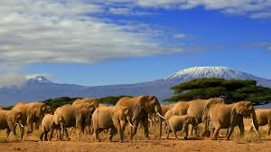
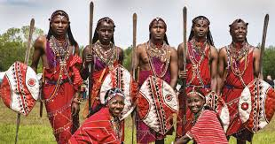

KENYA
Current Kenyan Flag 2024
About Kenya
Counties and Tribes
The tribes present

Elephants in Kenya
Kenya is a she country. She is found in Africa
Eastern Africa
Africa has 55 countries
Kenya is located in Eastern part of Africa.
Main language being Swahili.
I would love to mention a few of them:
Kenya
Tanzania
Uganda
Rwanda
Burundi
South Sudan
Somalia
Ethiopia
Eritrea
Djibouti
Seychelles
Comoros
Madagascar
Mauritius
COUNTIES PRESENT
She has a total of 47 counties
TRIBES
She has 42 tribes.
Bantu, Nilotic, and Cushitic.
tribes in Kenya:
MDN

The Maasai tribe
Abagusii
Aembu
Araab
Armenian
Baganda
Bajuni
Bantu
Bare
Bari
Basuba
Basotho
Bena
Chaga
Digo
Embu
Giriama
Gusii
Kalenjin
Kamba
Kikuyu
Kisii
Luo
Luhya
Mijikenda
Nandi
Oromo
Samburu
Sukuma
Taita-Taveta
Teso
<
Mercy Atieno >>>
© 2025 All rights reserved.
Back to the Top